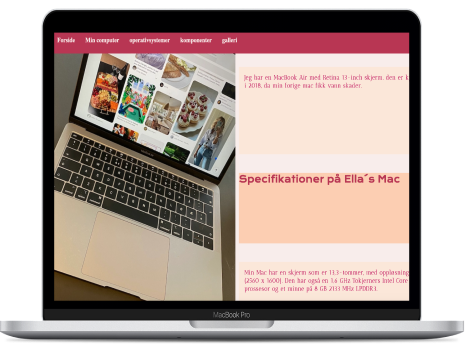

I Tema 2 fikk vi introdusert kodning i HTML og CSS. Vi lærte om forskjellige layout prinsipper som Grid og flex i tillegg til å lage et site responsivt i mobil og Website. Vi lærte også om design prinsipper og hvordan vi oppfatter og ser ting. Designprinsipper er som normer som alle forstår akkurat som ikoner vi alle kan gjenkjenne. Det å bryte de kan skape forvirring og lite brukervennlige sider. Vi har Gestaltlovene, visuelt hierarki, farger og de 7 viktige design konvensjoner for websites. I studiestartsprøven valgte jeg og legge vekt på de 7 konvensjonene, for og løse min oppgave ved og bruke grids, for å skape struktur, ro og orden på sitet. jeg plasserte hovednavigasjon øverst på siden og gjerne med font og farger som gjør at du oppfatter der tidlig og du kan navigere deg dit du trenger. Gjennom å bruke font, farver og størrelser lager jeg et innholds hierarki som gjør at du oppfatter det viktigste først. Dette har jeg gjort gjennom og bruke forskjellige størrelser på overskrift, under overskrift og brødtekst.
